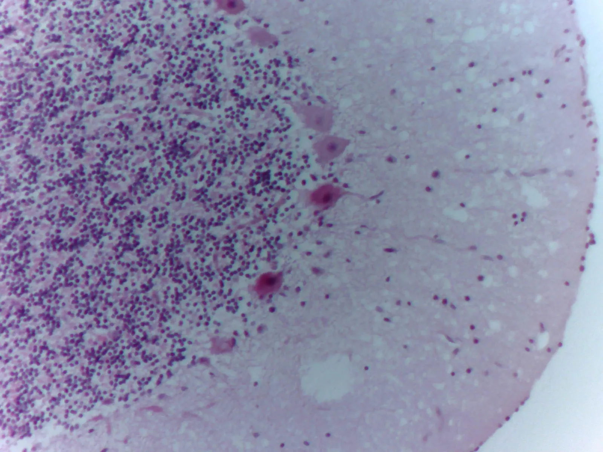
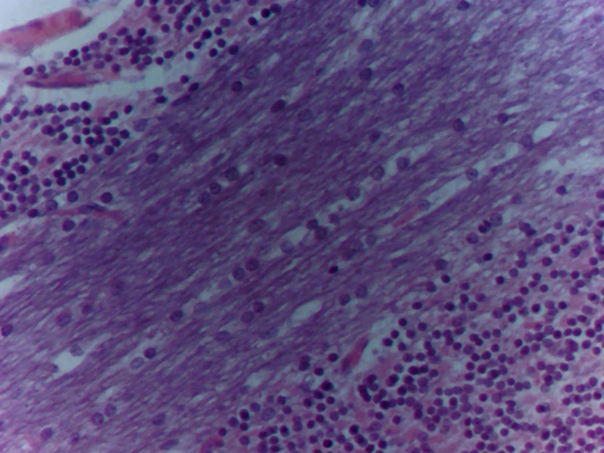
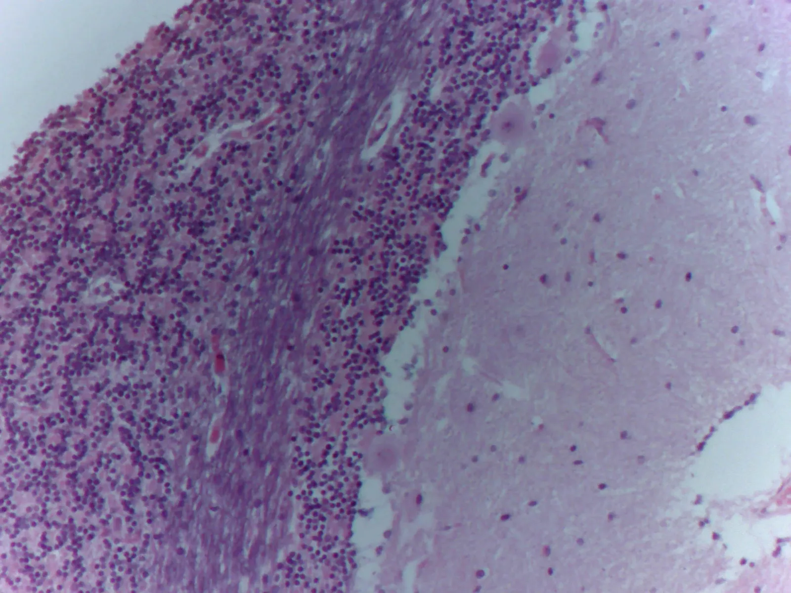
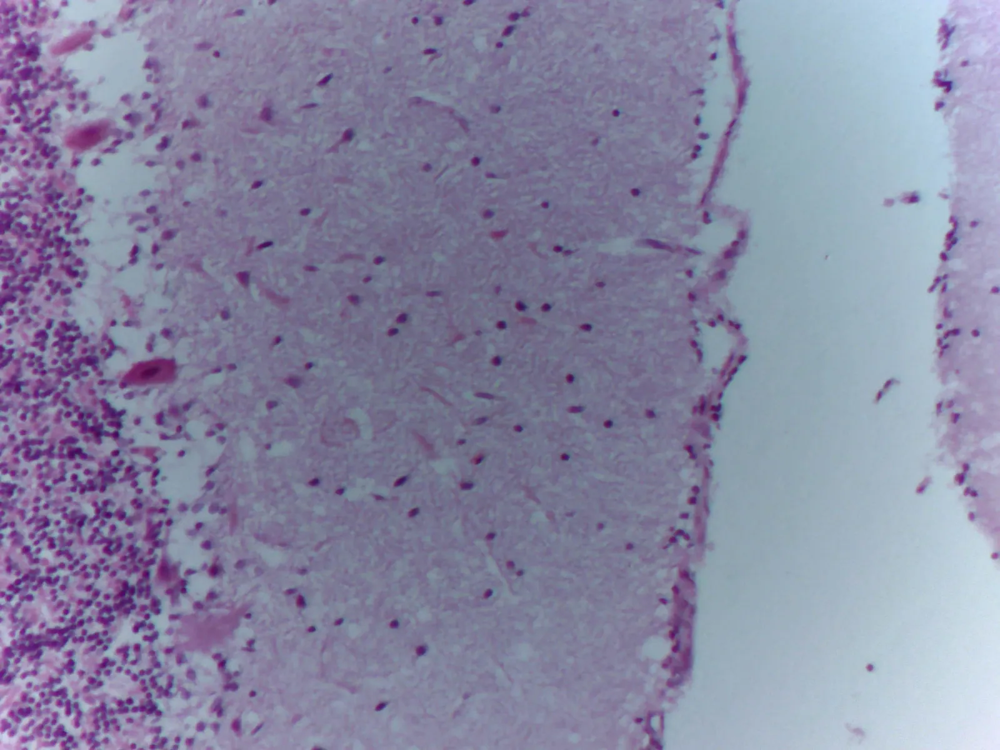
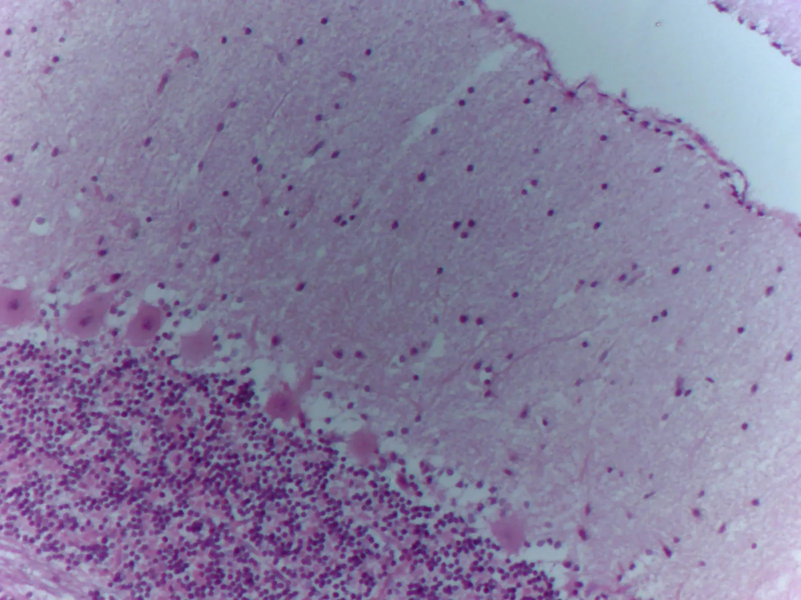
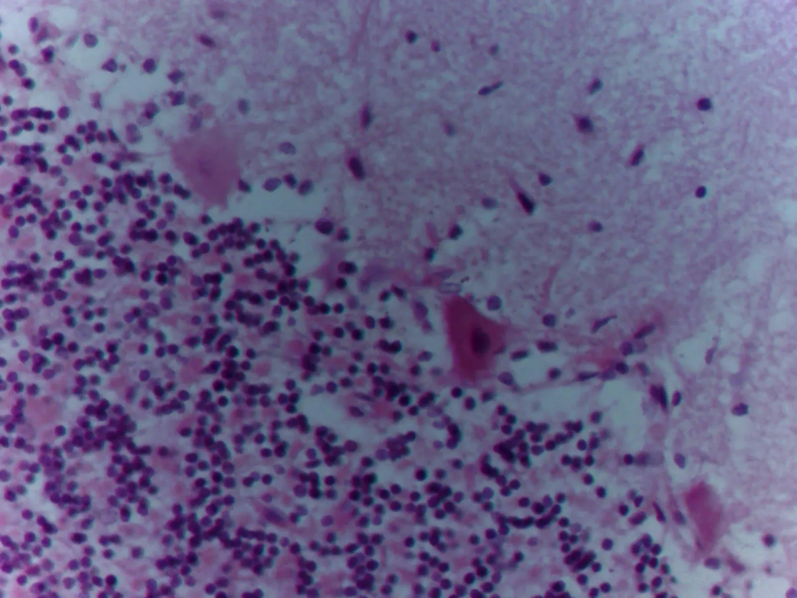
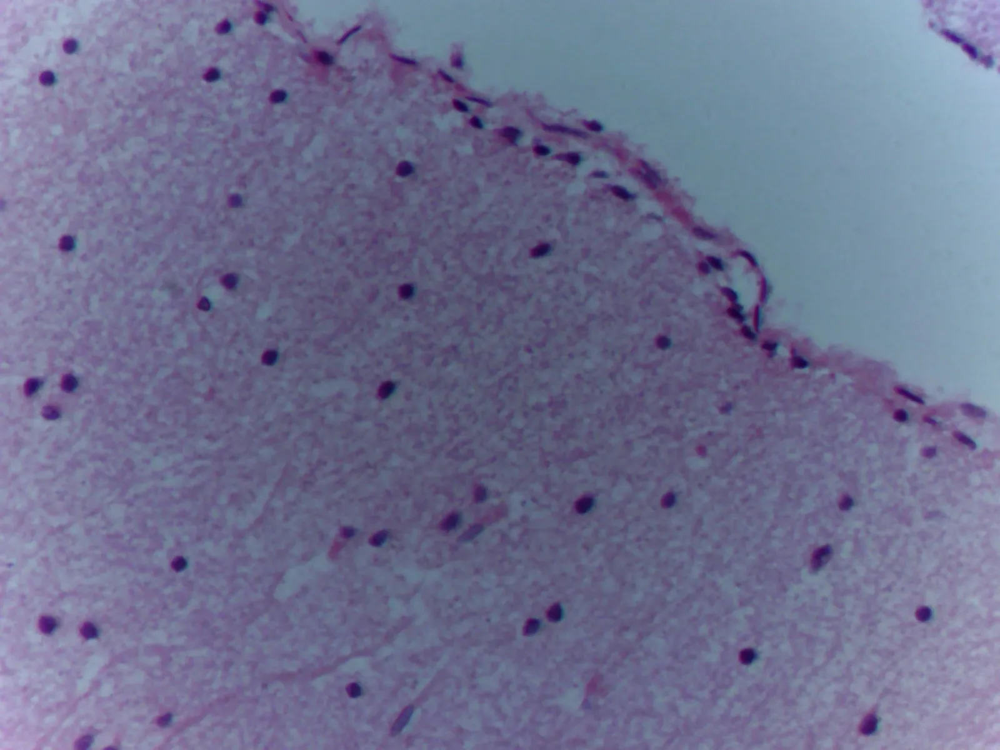

Lâmina 62 · Tecido nervoso
Cerebelo







Toque na imagem para ampliar. No computador, use as setas do teclado para trocar de imagem.
Lâmina 62 · Tecido nervoso







Toque na imagem para ampliar. No computador, use as setas do teclado para trocar de imagem.